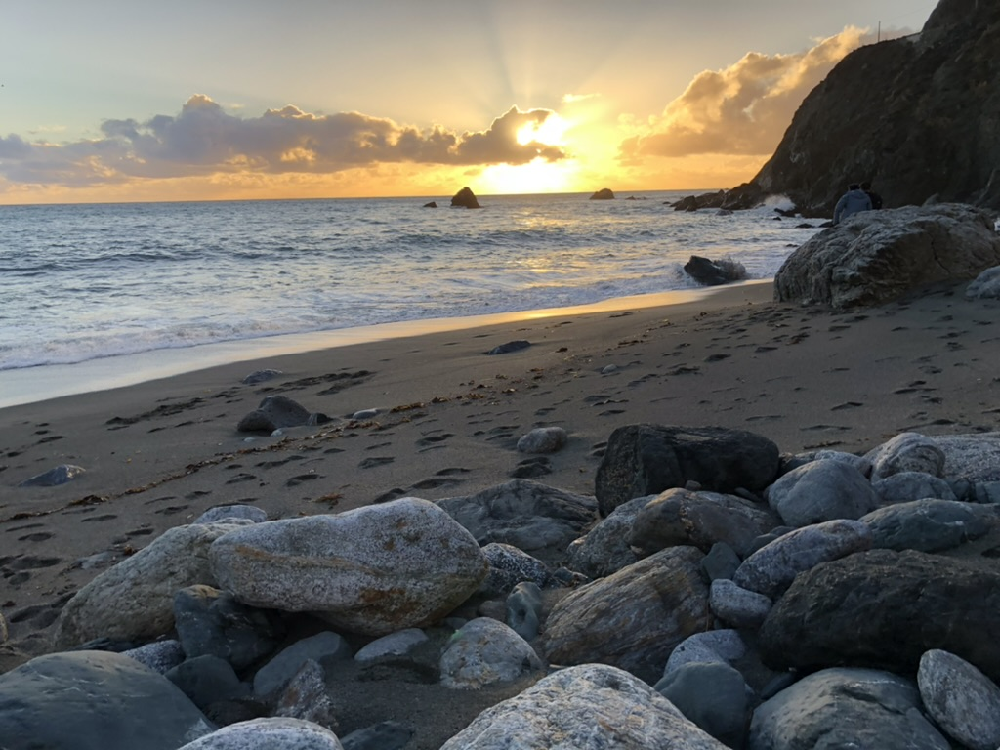

Camping in Big Sur is a dream come true for nature lovers and outdoor enthusiasts. This stunningly beautiful 90-mile stretch of coastline on the central coast of California boasts redwood forests, waterfalls, ocean cliffs, and beaches, making it an ideal destination for camping.
Big Sur offers several camping options, ranging from traditional campsites to glamping tents and cabins.
The Best of Both Worlds
One of the most unique camping experiences in Big Sur is at Limekiln State Park Campground. The campground is perched on a bluff overlooking the Pacific Ocean, offering breathtaking views of the coastline. The 29 spacious campsites are surrounded by trees and shrubs, offering plenty of privacy, and each site comes with a fire pit and picnic table. Visitors to Lime Kiln State Park Campground can enjoy hiking in the park, which features several trails with stunning views of the coastline, and whale watching from the campground itself.
One of the unique features of camping at Limekiln is the opportunity to see the bioluminescent plankton that sometimes appears in the water at night. These tiny organisms light up the water, creating a mesmerizing and otherworldly experience for campers.
"Can we live in the trees?" - Willa Ivey (4-years-old)

Pfeiffer Big Sur State Park is another popular camping destination in the area. The park offers a variety of camping sites, including RV sites, tent sites, and cabins. The park features hiking trails, a river for swimming, and stunning views of the surrounding redwoods. Other popular camping options in Big Sur include the Ventana Campground and the Fernwood Resort.
Plenty of Experiences
In addition to camping, Big Sur offers a wide range of outdoor activities for visitors, including hiking, kayaking, fishing, and swimming. The iconic McWay Falls Trail is a must-see, with a short hike leading to a picturesque waterfall cascading onto a secluded beach.
"The long drive makes it worth it." - Violet Ivey (7-years-old)
Overall, camping in Big Sur is a unique and unforgettable experience. With its stunning natural beauty and endless outdoor activities, it is no wonder that Big Sur is a favorite destination for nature lovers and adventurers alike. Whether you choose to camp at Lime Kiln State Park Campground or one of the other campgrounds in the area, Big Sur is a perfect destination for a peaceful and scenic camping experience on the California coast.

Big Sur is a popular destination for camping, and there are several campgrounds in the area. The cost of camping in Big Sur varies depending on the campground and the type of site you choose. The cost of camping at Lime Kiln State Park Campground is $35 per night for a tent site and $50 per night for an RV site. The cost of camping at Pfeiffer Big Sur State Park is $35 per night for a tent site and $50 per night for an RV site. The cost of camping at Ventana Campground is $35 per night for a tent site and $50 per night for an RV site. The cost of camping at Fernwood Resort is $35 per night for a tent site and $50 per night for an RV site.
How to Get There
Big Sur is located on the central coast of California, about 150 miles south of San Francisco and 300 miles north of Los Angeles. The closest airport is Monterey Regional Airport, which is about 30 miles north of Big Sur. The closest major airport is San Jose International Airport, which is about 100 miles north of Big Sur.
Wonderful Weather
The weather in Big Sur is mild year-round, making it a great place to visit any time of the year. The average temperature in the area is 70 degrees Fahrenheit, and the average low is 40 degrees Fahrenheit. The area is also known for its clear skies, which make it a great spot for stargazing.
BIG SUR WEATHERHow to Book a Campsite
There are several campgrounds in the area. The cost of camping in Big Sur varies depending on the campground and the type of site you choose. The cost of camping at Limekiln State Park Campground is $35 per night for a tent site and $50 per night for an RV site. The cost of camping at Pfeiffer Big Sur State Park is $35 per night for a tent site and $50 per night for an RV site.
Booking a campsite is super easy, but spaces go fast, so it's important to plan ahead.
To book your family adventure, click the link below to start your reservation.
https://www.parks.ca.gov/?page_id=577Happy camping!